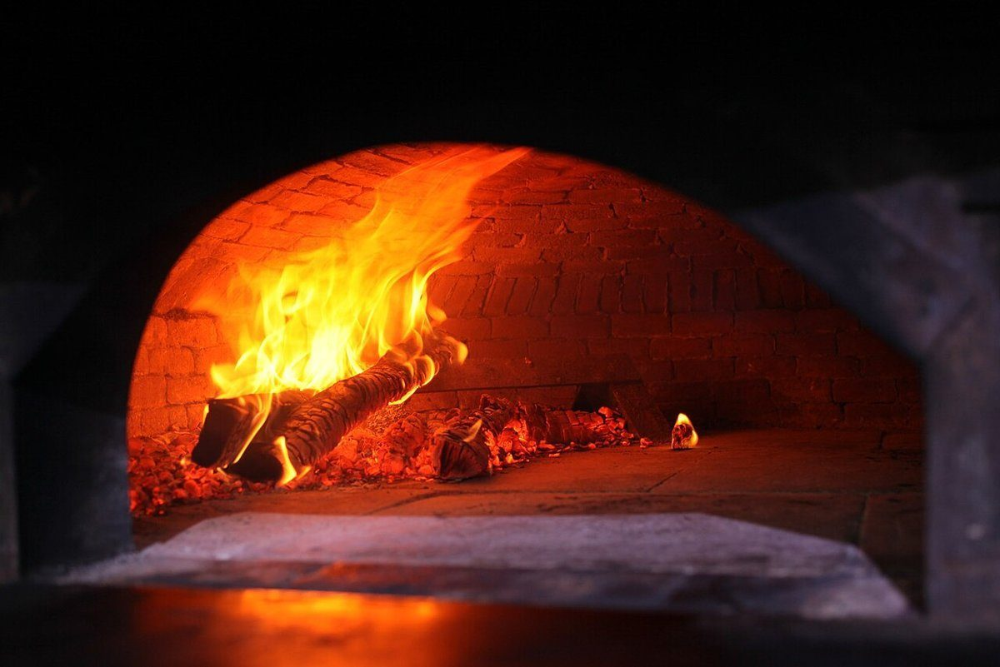
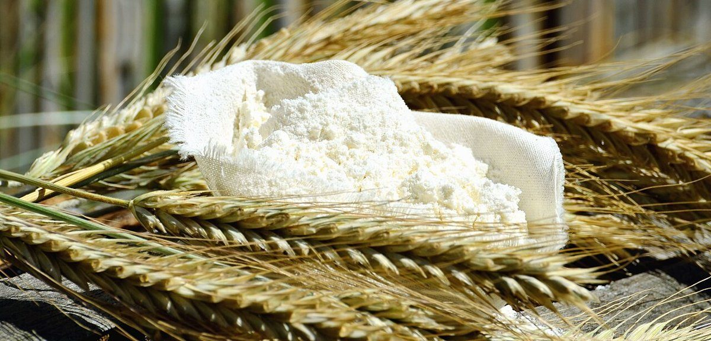
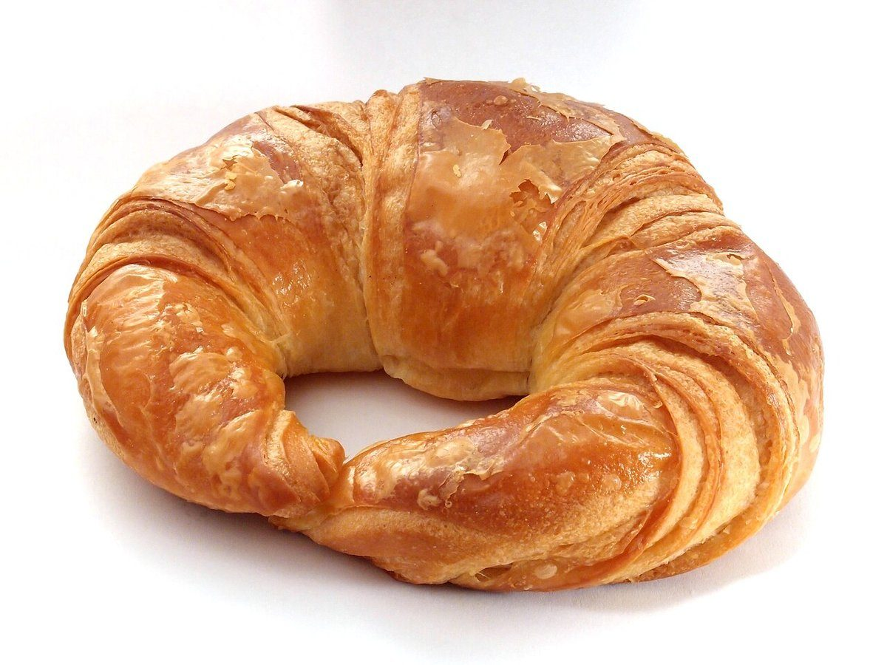

店のこと
店のこと
お店について確認できているのは、所在地・電話番号・Instagramのアカウントです。
確認できていること
- 店名は「ペロリ」、業種はベーカリー(町のパン屋)
- 所在地は高知県南国市片山１４０２−１(〒783-0081)
- 電話番号は088-821-8563
- Instagramは @matipan_perori
- 営業時間・定休日・メニュー・価格・ご予約・駐車場は準備中

想像してみる
「ペロリ」という名前から
ここから先は制作側が想像して書いたもので、お店の実際の様子・考え・商品とは関係がありません。
由来は分かりません。制作側は、「おいしくて、つい完食してしまう」ような気持ちを表したことばかもしれない、と連想しました。町のパン屋という業種のとおり、日々のパンを気軽に手に取れるお店なのかもしれません(想像です)。


